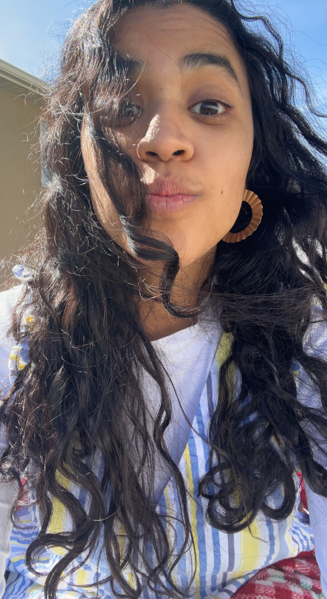

Andrea Melgoza grew up in San Antonio, Texas being the second oldest in a family of seven. From a very young age she has showed kindness and enthusiasm towards everything she has done. Being a child of immigrants, Andrea truly knows what it means to work hard. She has consistently worked to achieve her goals and now she expresses those talents through her photography.